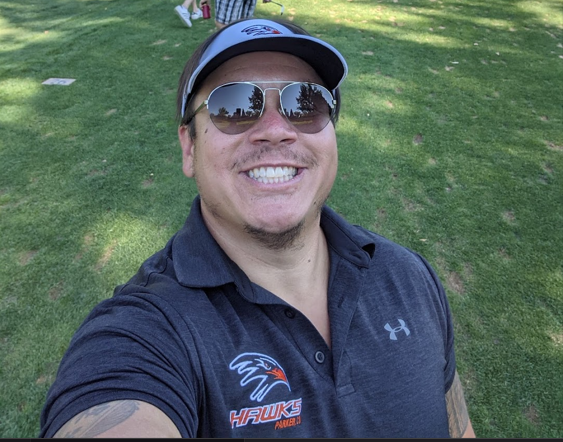

Offense Line Drills
A curated set of fundamental drills focused on improving footwork, hand placement, leverage, and blocking technique. These drills are designed to build confidence, discipline, and physicality in youth offensive linemen, helping them master both run and pass protection through simple, repeatable movements.
Read More

Coaching Philosophy
Core principles that guide my approach to coaching youth football — focusing on effort, discipline, player development, and building character on and off the field.
Read More

Welcome!
I'm Coach Kyle. A passionate youth football coach with 3 years of experience helping young athletes develop their skills, confidence, and love for the game. I believe coaching is about more than just winning — it’s about teaching teamwork, discipline, and sportsmanship that will benefit players on and off the field. This site is my way of sharing the drills, tips, and resources I’ve gathered over the years to support fellow coaches and grow the youth football community.
Read More